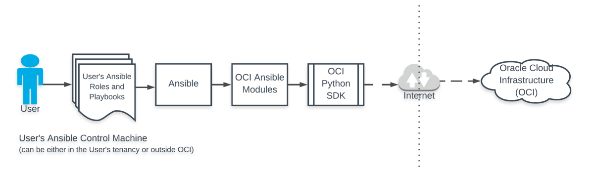
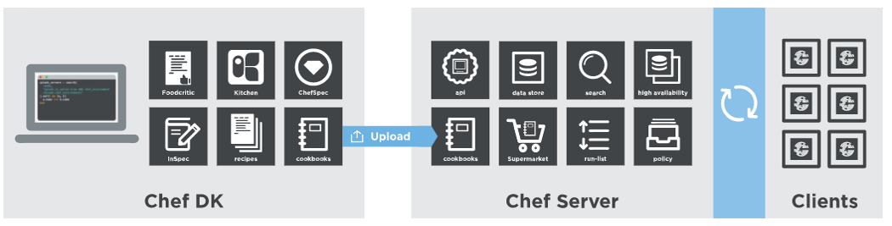
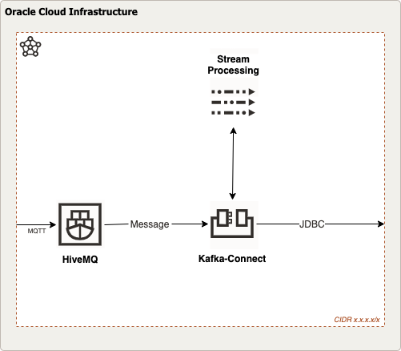

<div class="initial-content">
  <div id="main" role="main">

  <article class="page has-sidebar" itemscope itemtype="https://schema.org/CreativeWork">
    <meta itemprop="headline" content="Workload Deployment">
    
    <meta itemprop="datePublished" content="2021-12-09T08:00:00+00:00">
    


    <header>
      <h1 id="page-title" class="page__title" itemprop="headline">Workload Deployment
</h1>
      


    </header>

    <section class="page__content" itemprop="text">
      

        <picture class="aligncenter">
                <source srcset="assets/landing-zone.png 1x" />
                
            </picture>

<h2 id="oci-best-practices">OCI best practices</h2>

<p>Oracles’s best practice recommendation for workloads on Oracle Cloud Infrastructure (OCI) is to use an <strong>operator host</strong> to install and maintain the service application and configuration for the workload.</p>

<p>As you might imagine, since the number of applications and needed configurations varies, our goal at this step will be to dig deeper into the concept of the operator host and explore which configurations and automation tools can be best used to deploy your workload on OCI.</p>

<h2 id="operator-host">Operator Host</h2>

<p>The aim of the operator host is to:</p>

<ol>
  <li>Perform post-provisioning tasks with any automation tools that require a local installation.</li>
  <li>Provide administrators access without the need to upload API authentication keys (instance_principal).</li>
</ol>

<h3 id="access-to-operator-host">Access to Operator Host</h3>

<p>As described in the <a href="getting-started-with-oci-step-2-base">base</a> section of the series, OCI provides the ability to use a Bastion service for a controlled and secure access to resources in your tenancy.</p>

<p>The operator host concept leverages this service, providing administrators and application hosts a quick and secure mechanism to access a system which can run scripts or any automation tool for maintaining and operating the services.</p>

<h2 id="oci-tool-support-for-automation-and-configuration-management">OCI Tool Support for Automation and Configuration Management</h2>

<p>Terraform is primarily used to define the infrastructure required to host the applications for the service. However, by itself, Terraform is not designed to perform certain application installation or configuration tasks.</p>

<p>Oracle recognizes that everyone’s needs are different. Throughout this series we’ve attempted to present ways to use the most common tools on the market in combination with Terraform to provide and guide you with a set of best practices. As always, it’s up to you to decide which tool combination best suits your individual workload and which best fulfills your requirements.</p>

<p>Terraform is focussed on Infrastructure as Code (IaC). While its strength lies in provisioning resources there’s a potentially need for tools to install, configure, and manage applications on top of the infrastructure. There are a number of external tools which can be used to automate the workload deployment.</p>

<p>In this session, we’ll focus on how to use the most common tools like Ansible, Puppet, and Chef. We’ll also take a cloud-native approach, so we’ll show you in a demo how you can leverage Helm charts to deploy workloads via the Oracle Resource Manager onto an OKE cluster deployed <a href="./getting-started-with-oci-step-4-app-infrastructure.md">previously</a>.</p>

<h3 id="ansible">Ansible</h3>

<p>OCI supports the use of Ansible’s modules to automate cloud infrastructure provisioning along with configuration, complex operation process orchestration, and deployment/maintenance of your software assets.</p>

<picture class="">
                <source srcset="assets/ansible.png 1x" />
                
            </picture>

<p><strong>Resources:</strong></p>

<ul>
  <li>
    <p>The OCI Ansible collection supports both Ansible Tower and AWX.</p>

    <ul>
      <li><strong>Ansible Tower -</strong> For more information on how to set up the collection with Ansible Tower, refer to the <a href="https://blogs.oracle.com/cloud-infrastructure/post/using-oracle-cloud-infrastructure-with-ansible-tower-and-awx">Ansible blog post</a>.</li>
      <li><strong>AWX -</strong> To install the free version of Ansible Tower (AWX) on an OCI Compute instance, you can use <a href="https://github.com/oracle-quickstart/oci-ansible-awx">ansible solution on GitHub</a> and the following <a href="https://docs.oracle.com/en-us/iaas/Content/API/SDKDocs/ansiblesamples.htm#Sample_Ansible_Playbooks">ansible example playbooks</a>.</li>
    </ul>
  </li>
  <li>A complete example of how you can use Ansible to deploy Kubernetes and Istio can be found in this <a href="https://blog.kube-mesh.io/single-click-deployment-of-oke-istio-mushop-using-ansible-from-oci-cloud-shell/">article</a>.</li>
  <li>For additional information on Ansible, check out the <a href="https://docs.oracle.com/en-us/iaas/Content/API/SDKDocs/ansible.htm">ansible collection</a>.</li>
</ul>

<h3 id="puppet">Puppet</h3>

<p>While many organizations are using Terraform to provision Oracle cloud resources, a solution for continuous integration should be considered when it comes to ongoing management of resources. That’s where Puppet can help. With Puppet you can:</p>

<ul>
  <li>Integrate cloud resources into your existing infrastructure and manage everything with one tool.</li>
  <li>Use existing <a href="https://puppet.com/docs/puppet/5.5/hiera_intro.html">puppet_hiera</a> data to configure parts of your OCI infrastructure.</li>
  <li>Have a tighter integration between OCI configuration in general and the configuration management on your systems.</li>
</ul>

<h4 id="extend-puppet-with-oci_config">Extend Puppet with <code class="language-plaintext highlighter-rouge">oci_config</code></h4>

<p>The <code class="language-plaintext highlighter-rouge">oci_config</code> module extends the Puppet language to contain types needed to create and manage the lifecycle of objects within your Oracle Cloud Infrastructure. Although this is traditionally the domain of Terraform scripts, being able to manage these objects with Puppet has proven to be a big plus for many customers. For example:</p>

<ul>
  <li>Your organization is already using Puppet and not Terraform. Introducing a new tool into your organization might be more then you want or need. In these cases, Puppet in combination with this module can be a great help.</li>
  <li>You want to use existing Hiera data to configure parts of your OCI infrastructure. In this case, using this module is great. It integrates with all of the existing hieradata, just like your other Puppet code.</li>
  <li>You need tighter integration between OCI configuration in general and the configuration management on your systems. Again, this module is for you. Since it makes use of standard Puppet you can use all of the rich Puppet features like exported resources to integrate all of your configuration settings both on the cloud level as well as on the machines.</li>
</ul>

<p><strong>Puppet example code:</strong></p>

<p>Configuration for using a tenant:</p>

<div class="language-console highlighter-rouge"><div class="highlight"><pre class="highlight"><code><span class="go">puppet apply /software/tenant_setup.pp
</span></code></pre></div></div>

<p>Your output should be something like:</p>

<div class="language-console highlighter-rouge"><div class="highlight"><pre class="highlight"><code><span class="go">Notice: Compiled catalog for oci in environment production in 0.09 seconds
Notice: /Stage[main]/Main/Oci_tenant[enterprisemodules]/fingerprint: defined 'fingerprint' as 'xx:xx:xx:xx:xx:xx:xx:xx:xx:xx:xx:xx:xx:xx:xx:xx'
Notice: /Stage[main]/Main/Oci_tenant[enterprisemodules]/private_key: created with specified value
Notice: /Stage[main]/Main/Oci_tenant[enterprisemodules]/region: defined 'region' as 'eu-frankfurt-1'
Notice: /Stage[main]/Main/Oci_tenant[enterprisemodules]/tenancy_ocid: defined 'tenancy_ocid' as 'ocid1.tenancy.oc1..xxxxxxxxxxxxxxxxxxxxxxxxxxxxxxxxxxxxxxxxxxxxxxxxxxxxxxxxxxxx'
Notice: /Stage[main]/Main/Oci_tenant[enterprisemodules]/user_ocid: defined 'user_ocid' as 'ocid1.user.oc1..xxxxxxxxxxxxxxxxxxxxxxxxxxxxxxxxxxxxxxxxxxxxxxxxxxxxxxxxxxxx'
Notice: Applied catalog in 0.02 seconds
</span></code></pre></div></div>

<p><strong>First inspection:</strong></p>

<div class="language-console highlighter-rouge"><div class="highlight"><pre class="highlight"><code><span class="go">puppet resource oci_identity_compartment
</span></code></pre></div></div>

<p>Your output should look something like:</p>

<div class="language-console highlighter-rouge"><div class="highlight"><pre class="highlight"><code><span class="gp">bash-4.2#</span><span class="w"> </span>puppet resource oci_identity_compartment
<span class="go">*** ENTERPRISE MODULES Universal License INTERNAL USE ONLY ***
oci_identity_compartment { 'your_tenant (root)/ManagedCompartmentForPaaS':
</span><span class="gp">  ensure          =&gt;</span><span class="w"> </span><span class="s1">'present'</span>,
<span class="gp">  compartment     =&gt;</span><span class="w"> </span><span class="s1">'/'</span>,
<span class="gp">  compartment_id  =&gt;</span><span class="w"> </span><span class="s1">'ocid1.tenancy.oc1..xxxxxxxxxxxxxxxxxxxxxxxxxxxxxxxxxxxxxxxxxxxxxxxxxxxxxxxxxxxx'</span>,
<span class="gp">  description     =&gt;</span><span class="w"> </span><span class="s1">'idcs-f7246e2bbacf4a11a7e231507e34fdec|22626923|user@domain.com-Enterprise Modules B.V.-838062'</span>,
<span class="gp">  id              =&gt;</span><span class="w"> </span><span class="s1">'ocid1.compartment.oc1..aaaaaaaai2wkrvdvyxfuekjbt3jnv7b4hrlkvwnklu6uryy2daqsq425tzaa'</span>,
<span class="gp">  lifecycle_state =&gt;</span><span class="w"> </span><span class="s1">'ACTIVE'</span>,
<span class="gp">  provider        =&gt;</span><span class="w"> </span><span class="s1">'sdk'</span>,
<span class="gp">  time_created    =&gt;</span><span class="w"> </span><span class="s1">'2019-10-24T08:42:26+00:00'</span>,
<span class="go">}
oci_identity_compartment { 'your_tenant (root)/test_compartment_1':
</span><span class="gp">  ensure          =&gt;</span><span class="w"> </span><span class="s1">'present'</span>,
<span class="gp">  compartment     =&gt;</span><span class="w"> </span><span class="s1">'/'</span>,
<span class="gp">  compartment_id  =&gt;</span><span class="w"> </span><span class="s1">'ocid1.tenancy.oc1..xxxxxxxxxxxxxxxxxxxxxxxxxxxxxxxxxxxxxxxxxxxxxxxxxxxxxxxxxxxx'</span>,
<span class="gp">  description     =&gt;</span><span class="w"> </span><span class="s1">'changed'</span>,
<span class="gp">  id              =&gt;</span><span class="w"> </span><span class="s1">'ocid1.compartment.oc1..aaaaaaaatfskqfckrl4sucabclbsss47uyttlmwwur6lsm7crl3lrz7glfta'</span>,
<span class="gp">  lifecycle_state =&gt;</span><span class="w"> </span><span class="s1">'ACTIVE'</span>,
<span class="gp">  provider        =&gt;</span><span class="w"> </span><span class="s1">'sdk'</span>,
<span class="gp">  time_created    =&gt;</span><span class="w"> </span><span class="s1">'2020-01-23T15:42:35+00:00'</span>,
<span class="go">}
</span></code></pre></div></div>

<p><strong>Resources:</strong></p>

<ul>
  <li><a href="https://www.enterprisemodules.com/blog/2020/02/getting-to-know-oracle-cloud-with-puppet-part-1/">oci_identity_compartment</a></li>
  <li>Download the <code class="language-plaintext highlighter-rouge">oci_config</code> module from <a href="https://forge.puppet.com/enterprisemodules/oci_config?_ga=2.53914861.492612131.1628576569-1666656837.1628576569">Puppet forge</a>.</li>
  <li>Read the <a href="https://www.enterprisemodules.com/blog/2020/02/getting-to-know-oracle-cloud-with-puppet-part-1/">Puppet Enterprise Guide</a> to install the <code class="language-plaintext highlighter-rouge">oci_config</code> Puppet module.</li>
  <li>Follow the guide to <a href="https://forge.puppet.com/configuration-management/enterprisemodules/deploy-oracle-19c?_ga=2.93880664.492612131.1628576569-1666656837.1628576569">deploy an Oracle 19 database via Puppet</a>.</li>
</ul>

<h3 id="chef">Chef</h3>

<p>Chef is a powerful automation platform that transforms infrastructure into code. Whether you’re operating in the cloud, on-premises, or in a hybrid environment, Chef automates how infrastructure is configured, deployed, and managed across your network, no matter its size.</p>

<p>This diagram shows how you develop, test, and deploy your Chef code:</p>

<picture class="">
                <source srcset="assets/chef.png 1x" />
                
            </picture>

<p><em>Chef Plugin for OCI (<a href="https://docs.chef.io/platform_overview.html">Image Courtesy</a>)</em></p>

<h3 id="knife-oci-plugin"><code class="language-plaintext highlighter-rouge">knife-oci</code> plugin</h3>

<p>The <strong><a href="https://docs.us-phoenix-1.oraclecloud.com/Content/API/SDKDocs/knifeplugin.htm">knife-oci</a></strong> plugin allows users to interact with OCI through Chef Knife.</p>

<p>The following are the available <strong>knife-oci</strong> plugin commands:</p>

<table>
  <thead>
    <tr>
      <th>Action</th>
      <th>Command</th>
    </tr>
  </thead>
  <tbody>
    <tr>
      <td>Launch an OCI instance and bootstrap it as a Chef node</td>
      <td><code class="language-plaintext highlighter-rouge">knife oci server create</code></td>
    </tr>
    <tr>
      <td>List OCI compartments</td>
      <td><code class="language-plaintext highlighter-rouge">knife oci compartment list</code></td>
    </tr>
    <tr>
      <td>Delete an OCI instance</td>
      <td><code class="language-plaintext highlighter-rouge">knife oci server delete</code></td>
    </tr>
    <tr>
      <td>List OCI instances in a given compartment. <br /><strong>Note:</strong> All instances in the compartment are returned, not only those that are Chef nodes</td>
      <td><code class="language-plaintext highlighter-rouge">knife oci server list</code></td>
    </tr>
    <tr>
      <td>List the images in a compartment</td>
      <td><code class="language-plaintext highlighter-rouge">knife oci image list</code></td>
    </tr>
    <tr>
      <td>List the VCNs in a compartment</td>
      <td><code class="language-plaintext highlighter-rouge">knife oci vcn list</code></td>
    </tr>
    <tr>
      <td>List the subnets in a VCN</td>
      <td><code class="language-plaintext highlighter-rouge">knife oci subnet list</code></td>
    </tr>
    <tr>
      <td>List the shapes that may be used for a particular image type</td>
      <td><code class="language-plaintext highlighter-rouge">knife oci shape list</code></td>
    </tr>
    <tr>
      <td>List the availability domains for your tenancy</td>
      <td><code class="language-plaintext highlighter-rouge">knife oci ad list</code></td>
    </tr>
  </tbody>
</table>

<p><strong>Resources:</strong></p>

<ul>
  <li>The <code class="language-plaintext highlighter-rouge">knife-oci</code> plugin can be downloaded from <a href="https://github.com/oracle/knife-oci/releases">the public repo</a>.</li>
  <li>How to setup the knife-oci plugin can be found in this <a href="https://medium.com/oracledevs/using-oracles-chef-plugin-to-provision-resource-in-oracle-cloud-infrastructure-5891100e20ab">article</a>.</li>
  <li><a href="https://docs.oracle.com/en-us/iaas/Content/API/SDKDocs/knifeplugin.htm">OCI documentation for the chef</a>.</li>
</ul>

<h3 id="helm">Helm</h3>

<p><em>Helm</em> helps you manage Kubernetes applications while <em>Helm Charts</em> help you define, install, and upgrade even the most complex Kubernetes application. Charts are easy to create, version, share, and publish so you can avoid tedious copying-and-pasting.</p>

<p>Advantages of using Helm for the deployment of applications on top of Kubernetes:</p>

<ul>
  <li>Managed Complexity</li>
  <li>Easy Updates</li>
  <li>Simple Sharing</li>
  <li>Rollbacks</li>
</ul>

<h4 id="oracle-resource-manager">Oracle Resource Manager</h4>

<p>The Oracle Resource Manager (ORM) supports the Terraform provider for Helm and can be easily used in combination with the Terraform Kubernetes providers.</p>

<p><strong>Reference:</strong> Details about third-party provider versions of ORM can be found on this <a href="https://docs.oracle.com/en-us/iaas/Content/ResourceManager/Concepts/providers.htm">providers page</a>.</p>

<p>In order to get the needed information about the Kubernetes cluster, we’ll need to get the content of the Kubernetes cluster which has been deployed.</p>

<p>This can be achieved for the Kubernetes and Helm provider through the following:</p>

<div class="language-terraform highlighter-rouge"><div class="highlight"><pre class="highlight"><code><span class="c1"># Gets kubeconfig</span>
<span class="k">data</span> <span class="s2">"oci_containerengine_cluster_kube_config"</span> <span class="s2">"oke_cluster_kube_config"</span> <span class="p">{</span>
  <span class="nx">cluster_id</span> <span class="p">=</span> <span class="nx">oci_containerengine_cluster</span><span class="p">.</span><span class="nx">oke_cluster</span><span class="p">.</span><span class="nx">id</span>
<span class="p">}</span>

<span class="c1"># https://docs.cloud.oracle.com/en-us/iaas/Content/ContEng/Tasks/contengdownloadkubeconfigfile.htm#notes</span>
<span class="k">provider</span> <span class="s2">"kubernetes"</span> <span class="p">{</span>
  <span class="nx">load_config_file</span>       <span class="p">=</span> <span class="s2">"false"</span> <span class="c1"># Workaround for tf k8s provider &lt; 1.11.1 to work with ORM</span>
  <span class="nx">cluster_ca_certificate</span> <span class="p">=</span> <span class="nx">base64decode</span><span class="p">(</span><span class="nx">yamldecode</span><span class="p">(</span><span class="k">data</span><span class="p">.</span><span class="nx">oci_containerengine_cluster_kube_config</span><span class="p">.</span><span class="nx">oke_cluster_kube_config</span><span class="p">.</span><span class="nx">content</span><span class="p">)[</span><span class="s2">"clusters"</span><span class="p">][</span><span class="mi">0</span><span class="p">][</span><span class="s2">"cluster"</span><span class="p">][</span><span class="s2">"certificate-authority-data"</span><span class="p">])</span>
  <span class="nx">host</span>                   <span class="p">=</span> <span class="nx">yamldecode</span><span class="p">(</span><span class="k">data</span><span class="p">.</span><span class="nx">oci_containerengine_cluster_kube_config</span><span class="p">.</span><span class="nx">oke_cluster_kube_config</span><span class="p">.</span><span class="nx">content</span><span class="p">)[</span><span class="s2">"clusters"</span><span class="p">][</span><span class="mi">0</span><span class="p">][</span><span class="s2">"cluster"</span><span class="p">][</span><span class="s2">"server"</span><span class="p">]</span>
  <span class="nx">exec</span> <span class="p">{</span>
    <span class="nx">api_version</span> <span class="p">=</span> <span class="s2">"client.authentication.k8s.io/v1beta1"</span> <span class="c1"># Workaround for tf k8s provider &lt; 1.11.1 to work with orm - yamldecode(data.oci_containerengine_cluster_kube_config.oke_cluster_kube_config.content)["users"][0]["user"]["exec"]["apiVersion"]</span>
    <span class="nx">args</span> <span class="p">=</span> <span class="p">[</span><span class="nx">yamldecode</span><span class="p">(</span><span class="k">data</span><span class="p">.</span><span class="nx">oci_containerengine_cluster_kube_config</span><span class="p">.</span><span class="nx">oke_cluster_kube_config</span><span class="p">.</span><span class="nx">content</span><span class="p">)[</span><span class="s2">"users"</span><span class="p">][</span><span class="mi">0</span><span class="p">][</span><span class="s2">"user"</span><span class="p">][</span><span class="s2">"exec"</span><span class="p">][</span><span class="s2">"args"</span><span class="p">][</span><span class="mi">0</span><span class="p">],</span>
      <span class="nx">yamldecode</span><span class="p">(</span><span class="k">data</span><span class="p">.</span><span class="nx">oci_containerengine_cluster_kube_config</span><span class="p">.</span><span class="nx">oke_cluster_kube_config</span><span class="p">.</span><span class="nx">content</span><span class="p">)[</span><span class="s2">"users"</span><span class="p">][</span><span class="mi">0</span><span class="p">][</span><span class="s2">"user"</span><span class="p">][</span><span class="s2">"exec"</span><span class="p">][</span><span class="s2">"args"</span><span class="p">][</span><span class="mi">1</span><span class="p">],</span>
      <span class="nx">yamldecode</span><span class="p">(</span><span class="k">data</span><span class="p">.</span><span class="nx">oci_containerengine_cluster_kube_config</span><span class="p">.</span><span class="nx">oke_cluster_kube_config</span><span class="p">.</span><span class="nx">content</span><span class="p">)[</span><span class="s2">"users"</span><span class="p">][</span><span class="mi">0</span><span class="p">][</span><span class="s2">"user"</span><span class="p">][</span><span class="s2">"exec"</span><span class="p">][</span><span class="s2">"args"</span><span class="p">][</span><span class="mi">2</span><span class="p">],</span>
      <span class="nx">yamldecode</span><span class="p">(</span><span class="k">data</span><span class="p">.</span><span class="nx">oci_containerengine_cluster_kube_config</span><span class="p">.</span><span class="nx">oke_cluster_kube_config</span><span class="p">.</span><span class="nx">content</span><span class="p">)[</span><span class="s2">"users"</span><span class="p">][</span><span class="mi">0</span><span class="p">][</span><span class="s2">"user"</span><span class="p">][</span><span class="s2">"exec"</span><span class="p">][</span><span class="s2">"args"</span><span class="p">][</span><span class="mi">3</span><span class="p">],</span>
      <span class="nx">yamldecode</span><span class="p">(</span><span class="k">data</span><span class="p">.</span><span class="nx">oci_containerengine_cluster_kube_config</span><span class="p">.</span><span class="nx">oke_cluster_kube_config</span><span class="p">.</span><span class="nx">content</span><span class="p">)[</span><span class="s2">"users"</span><span class="p">][</span><span class="mi">0</span><span class="p">][</span><span class="s2">"user"</span><span class="p">][</span><span class="s2">"exec"</span><span class="p">][</span><span class="s2">"args"</span><span class="p">][</span><span class="mi">4</span><span class="p">],</span>
      <span class="nx">yamldecode</span><span class="p">(</span><span class="k">data</span><span class="p">.</span><span class="nx">oci_containerengine_cluster_kube_config</span><span class="p">.</span><span class="nx">oke_cluster_kube_config</span><span class="p">.</span><span class="nx">content</span><span class="p">)[</span><span class="s2">"users"</span><span class="p">][</span><span class="mi">0</span><span class="p">][</span><span class="s2">"user"</span><span class="p">][</span><span class="s2">"exec"</span><span class="p">][</span><span class="s2">"args"</span><span class="p">][</span><span class="mi">5</span><span class="p">],</span>
      <span class="nx">yamldecode</span><span class="p">(</span><span class="k">data</span><span class="p">.</span><span class="nx">oci_containerengine_cluster_kube_config</span><span class="p">.</span><span class="nx">oke_cluster_kube_config</span><span class="p">.</span><span class="nx">content</span><span class="p">)[</span><span class="s2">"users"</span><span class="p">][</span><span class="mi">0</span><span class="p">][</span><span class="s2">"user"</span><span class="p">][</span><span class="s2">"exec"</span><span class="p">][</span><span class="s2">"args"</span><span class="p">][</span><span class="mi">6</span><span class="p">]]</span>
      <span class="nx">command</span> <span class="p">=</span> <span class="nx">yamldecode</span><span class="p">(</span><span class="k">data</span><span class="p">.</span><span class="nx">oci_containerengine_cluster_kube_config</span><span class="p">.</span><span class="nx">oke_cluster_kube_config</span><span class="p">.</span><span class="nx">content</span><span class="p">)[</span><span class="s2">"users"</span><span class="p">][</span><span class="mi">0</span><span class="p">][</span><span class="s2">"user"</span><span class="p">][</span><span class="s2">"exec"</span><span class="p">][</span><span class="s2">"command"</span><span class="p">]</span>
  <span class="p">}</span>
<span class="p">}</span>

<span class="c1"># https://docs.cloud.oracle.com/en-us/iaas/Content/ContEng/Tasks/contengdownloadkubeconfigfile.htm#notes</span>
<span class="k">provider</span> <span class="s2">"helm"</span> <span class="p">{</span>
  <span class="nx">kubernetes</span> <span class="p">{</span>
    <span class="nx">load_config_file</span>       <span class="p">=</span> <span class="s2">"false"</span> <span class="c1"># Workaround for tf helm provider &lt; 1.1.1 to work with ORM</span>
    <span class="nx">cluster_ca_certificate</span> <span class="p">=</span> <span class="nx">base64decode</span><span class="p">(</span><span class="nx">yamldecode</span><span class="p">(</span><span class="k">data</span><span class="p">.</span><span class="nx">oci_containerengine_cluster_kube_config</span><span class="p">.</span><span class="nx">oke_cluster_kube_config</span><span class="p">.</span><span class="nx">content</span><span class="p">)[</span><span class="s2">"clusters"</span><span class="p">][</span><span class="mi">0</span><span class="p">][</span><span class="s2">"cluster"</span><span class="p">][</span><span class="s2">"certificate-authority-data"</span><span class="p">])</span>
    <span class="nx">host</span>                   <span class="p">=</span> <span class="nx">yamldecode</span><span class="p">(</span><span class="k">data</span><span class="p">.</span><span class="nx">oci_containerengine_cluster_kube_config</span><span class="p">.</span><span class="nx">oke_cluster_kube_config</span><span class="p">.</span><span class="nx">content</span><span class="p">)[</span><span class="s2">"clusters"</span><span class="p">][</span><span class="mi">0</span><span class="p">][</span><span class="s2">"cluster"</span><span class="p">][</span><span class="s2">"server"</span><span class="p">]</span>
    <span class="nx">exec</span> <span class="p">{</span>
      <span class="nx">api_version</span> <span class="p">=</span> <span class="nx">yamldecode</span><span class="p">(</span><span class="k">data</span><span class="p">.</span><span class="nx">oci_containerengine_cluster_kube_config</span><span class="p">.</span><span class="nx">oke_cluster_kube_config</span><span class="p">.</span><span class="nx">content</span><span class="p">)[</span><span class="s2">"users"</span><span class="p">][</span><span class="mi">0</span><span class="p">][</span><span class="s2">"user"</span><span class="p">][</span><span class="s2">"exec"</span><span class="p">][</span><span class="s2">"apiVersion"</span><span class="p">]</span>
      <span class="nx">args</span> <span class="p">=</span> <span class="p">[</span><span class="nx">yamldecode</span><span class="p">(</span><span class="k">data</span><span class="p">.</span><span class="nx">oci_containerengine_cluster_kube_config</span><span class="p">.</span><span class="nx">oke_cluster_kube_config</span><span class="p">.</span><span class="nx">content</span><span class="p">)[</span><span class="s2">"users"</span><span class="p">][</span><span class="mi">0</span><span class="p">][</span><span class="s2">"user"</span><span class="p">][</span><span class="s2">"exec"</span><span class="p">][</span><span class="s2">"args"</span><span class="p">][</span><span class="mi">0</span><span class="p">],</span>
        <span class="nx">yamldecode</span><span class="p">(</span><span class="k">data</span><span class="p">.</span><span class="nx">oci_containerengine_cluster_kube_config</span><span class="p">.</span><span class="nx">oke_cluster_kube_config</span><span class="p">.</span><span class="nx">content</span><span class="p">)[</span><span class="s2">"users"</span><span class="p">][</span><span class="mi">0</span><span class="p">][</span><span class="s2">"user"</span><span class="p">][</span><span class="s2">"exec"</span><span class="p">][</span><span class="s2">"args"</span><span class="p">][</span><span class="mi">1</span><span class="p">],</span>
        <span class="nx">yamldecode</span><span class="p">(</span><span class="k">data</span><span class="p">.</span><span class="nx">oci_containerengine_cluster_kube_config</span><span class="p">.</span><span class="nx">oke_cluster_kube_config</span><span class="p">.</span><span class="nx">content</span><span class="p">)[</span><span class="s2">"users"</span><span class="p">][</span><span class="mi">0</span><span class="p">][</span><span class="s2">"user"</span><span class="p">][</span><span class="s2">"exec"</span><span class="p">][</span><span class="s2">"args"</span><span class="p">][</span><span class="mi">2</span><span class="p">],</span>
        <span class="nx">yamldecode</span><span class="p">(</span><span class="k">data</span><span class="p">.</span><span class="nx">oci_containerengine_cluster_kube_config</span><span class="p">.</span><span class="nx">oke_cluster_kube_config</span><span class="p">.</span><span class="nx">content</span><span class="p">)[</span><span class="s2">"users"</span><span class="p">][</span><span class="mi">0</span><span class="p">][</span><span class="s2">"user"</span><span class="p">][</span><span class="s2">"exec"</span><span class="p">][</span><span class="s2">"args"</span><span class="p">][</span><span class="mi">3</span><span class="p">],</span>
        <span class="nx">yamldecode</span><span class="p">(</span><span class="k">data</span><span class="p">.</span><span class="nx">oci_containerengine_cluster_kube_config</span><span class="p">.</span><span class="nx">oke_cluster_kube_config</span><span class="p">.</span><span class="nx">content</span><span class="p">)[</span><span class="s2">"users"</span><span class="p">][</span><span class="mi">0</span><span class="p">][</span><span class="s2">"user"</span><span class="p">][</span><span class="s2">"exec"</span><span class="p">][</span><span class="s2">"args"</span><span class="p">][</span><span class="mi">4</span><span class="p">],</span>
        <span class="nx">yamldecode</span><span class="p">(</span><span class="k">data</span><span class="p">.</span><span class="nx">oci_containerengine_cluster_kube_config</span><span class="p">.</span><span class="nx">oke_cluster_kube_config</span><span class="p">.</span><span class="nx">content</span><span class="p">)[</span><span class="s2">"users"</span><span class="p">][</span><span class="mi">0</span><span class="p">][</span><span class="s2">"user"</span><span class="p">][</span><span class="s2">"exec"</span><span class="p">][</span><span class="s2">"args"</span><span class="p">][</span><span class="mi">5</span><span class="p">],</span>
        <span class="nx">yamldecode</span><span class="p">(</span><span class="k">data</span><span class="p">.</span><span class="nx">oci_containerengine_cluster_kube_config</span><span class="p">.</span><span class="nx">oke_cluster_kube_config</span><span class="p">.</span><span class="nx">content</span><span class="p">)[</span><span class="s2">"users"</span><span class="p">][</span><span class="mi">0</span><span class="p">][</span><span class="s2">"user"</span><span class="p">][</span><span class="s2">"exec"</span><span class="p">][</span><span class="s2">"args"</span><span class="p">][</span><span class="mi">6</span><span class="p">]]</span>
        <span class="nx">command</span> <span class="p">=</span> <span class="nx">yamldecode</span><span class="p">(</span><span class="k">data</span><span class="p">.</span><span class="nx">oci_containerengine_cluster_kube_config</span><span class="p">.</span><span class="nx">oke_cluster_kube_config</span><span class="p">.</span><span class="nx">content</span><span class="p">)[</span><span class="s2">"users"</span><span class="p">][</span><span class="mi">0</span><span class="p">][</span><span class="s2">"user"</span><span class="p">][</span><span class="s2">"exec"</span><span class="p">][</span><span class="s2">"command"</span><span class="p">]</span>
    <span class="p">}</span>
  <span class="p">}</span>
<span class="p">}</span>

</code></pre></div></div>

<blockquote class="notice">
  <p><strong>Best practice:</strong> It’s recommended that you separate Kubernetes by service into logical entities called <em>namespaces</em> (see <a href="#namespaces">below</a>).</p>
</blockquote>

<h4 id="namespaces">namespaces</h4>

<p>The following code snippet in Terraform creates a namespace:</p>

<div class="language-terraform highlighter-rouge"><div class="highlight"><pre class="highlight"><code><span class="k">resource</span> <span class="s2">"kubernetes_namespace"</span> <span class="s2">"&lt;service&gt;_namespace"</span> <span class="p">{</span>
  <span class="nx">metadata</span> <span class="p">{</span>
    <span class="nx">name</span> <span class="p">=</span> <span class="s2">"&lt;service&gt;"</span>
  <span class="p">}</span>
  <span class="nx">depends_on</span> <span class="p">=</span> <span class="p">[</span><span class="nx">oci_containerengine_node_pool</span><span class="p">.</span><span class="nx">oke_node_pool</span><span class="p">]</span>
<span class="p">}</span>
</code></pre></div></div>

<blockquote class="notice">
  <p><strong>Best practice:</strong> As we need to have a working Kubernetes up and ready with available worker nodes, we recommend that you wait until you can verify that worker nodes have been deployed in a previous step of Terraform.</p>
</blockquote>

<h3 id="deploy-kubernetes-application">Deploy Kubernetes application</h3>

<p>The next step would be to deploy your Kubernetes application with a Helm release into the previously created <a href="#namespaces">namespace</a>.</p>

<p>This can be achieved by storing your Helm files in a sub-directory of your Terraform environment (e.g., <em>helm_charts</em>) and referencing your charts in your Terraform code as follows:</p>

<div class="language-terraform highlighter-rouge"><div class="highlight"><pre class="highlight"><code><span class="k">resource</span> <span class="s2">"helm_release"</span> <span class="s2">"&lt;application_1&gt;"</span> <span class="p">{</span>
  <span class="nx">depends_on</span> <span class="p">=</span> <span class="p">[</span><span class="nx">oci_containerengine_node_pool</span><span class="p">.</span><span class="nx">oke_node_pool</span><span class="p">]</span>
  <span class="nx">name</span>       <span class="p">=</span> <span class="s2">"&lt;application_1&gt;"</span>
  <span class="nx">chart</span>      <span class="p">=</span> <span class="s2">"helm_charts/&lt;application_1&gt;"</span>
  <span class="nx">namespace</span>  <span class="p">=</span> <span class="nx">kubernetes_namespace</span><span class="p">.</span><span class="err">&lt;</span><span class="nx">service</span><span class="err">&gt;</span><span class="nx">_namespace</span><span class="p">.</span><span class="nx">id</span>
  <span class="nx">wait</span>       <span class="p">=</span> <span class="kc">false</span>
  <span class="nx">timeout</span>    <span class="p">=</span> <span class="mi">300</span>
<span class="p">}</span>
</code></pre></div></div>

<h4 id="deploy-multiple-applications">Deploy multiple applications</h4>

<p>It’s also possible to deploy multiple applications for your service in repeating the code fragment as follows:</p>

<div class="language-terraform highlighter-rouge"><div class="highlight"><pre class="highlight"><code><span class="k">resource</span> <span class="s2">"helm_release"</span> <span class="s2">"&lt;application_2&gt;"</span> <span class="p">{</span>
  <span class="nx">depends_on</span> <span class="p">=</span> <span class="p">[</span><span class="nx">oci_containerengine_node_pool</span><span class="p">.</span><span class="nx">oke_node_pool</span><span class="p">]</span>
  <span class="nx">name</span>       <span class="p">=</span> <span class="s2">"&lt;application_2&gt;"</span>
  <span class="nx">chart</span>      <span class="p">=</span> <span class="s2">"helm_charts/&lt;application_2&gt;"</span>
  <span class="nx">namespace</span>  <span class="p">=</span> <span class="nx">kubernetes_namespace</span><span class="p">.</span><span class="err">&lt;</span><span class="nx">service</span><span class="err">&gt;</span><span class="nx">_namespace</span><span class="p">.</span><span class="nx">id</span>
  <span class="nx">wait</span>       <span class="p">=</span> <span class="kc">false</span>
  <span class="nx">timeout</span>    <span class="p">=</span> <span class="mi">300</span>
<span class="p">}</span>
</code></pre></div></div>

<blockquote class="notice">
  <p><strong>Best practices:</strong></p>

  <ul>
    <li><strong><code class="language-plaintext highlighter-rouge">timeout</code> -</strong> Set a timeout to give Helm a time frame within which the deployment has to be completed.</li>
    <li><strong><code class="language-plaintext highlighter-rouge">depends_on</code> -</strong> As the Helm provider is not able to identify whether or not the Kubernetes deployment has been finished, we add a <code class="language-plaintext highlighter-rouge">depends_on</code> section to make sure that the Kubernetes cluster is up and running before deploying.</li>
  </ul>
</blockquote>

<p><strong>Reference:</strong> Information about namespaces can be found in this Kubernetes <a href="https://kubernetes.io/docs/concepts/overview/working-with-objects/namespaces/">article on namespaces</a>.</p>

<h2 id="demonstration-of-a-helm-deployment">Demonstration of a Helm deployment</h2>

<p>To demonstrate how to use the ORM to deploy workload on Kubernetes cluster, we’ll show an example by deploying a Helm release of an hivemq cluster and a kafka connector in one namespace.</p>

<p>The target setup will look as follows:</p>

<picture class="">
                <source srcset="assets/demo.png 1x" />
                
            </picture>

<p>We’re using the following generic code which can be used independent of the IaaS or Kubernetes stack:</p>

<div class="language-terraform highlighter-rouge"><div class="highlight"><pre class="highlight"><code><span class="c1"># Gets kubeconfig</span>
<span class="k">data</span> <span class="s2">"oci_containerengine_cluster_kube_config"</span> <span class="s2">"oke_cluster_kube_config"</span> <span class="p">{</span>
  <span class="nx">cluster_id</span> <span class="p">=</span> <span class="nx">oci_containerengine_cluster</span><span class="p">.</span><span class="nx">oke_cluster</span><span class="p">.</span><span class="nx">id</span>
<span class="p">}</span>

<span class="c1"># https://docs.cloud.oracle.com/en-us/iaas/Content/ContEng/Tasks/contengdownloadkubeconfigfile.htm#notes</span>
<span class="k">provider</span> <span class="s2">"kubernetes"</span> <span class="p">{</span>
  <span class="nx">load_config_file</span>       <span class="p">=</span> <span class="s2">"false"</span> <span class="c1"># Workaround for tf k8s provider &lt; 1.11.1 to work with ORM</span>
  <span class="nx">cluster_ca_certificate</span> <span class="p">=</span> <span class="nx">base64decode</span><span class="p">(</span><span class="nx">yamldecode</span><span class="p">(</span><span class="k">data</span><span class="p">.</span><span class="nx">oci_containerengine_cluster_kube_config</span><span class="p">.</span><span class="nx">oke_cluster_kube_config</span><span class="p">.</span><span class="nx">content</span><span class="p">)[</span><span class="s2">"clusters"</span><span class="p">][</span><span class="mi">0</span><span class="p">][</span><span class="s2">"cluster"</span><span class="p">][</span><span class="s2">"certificate-authority-data"</span><span class="p">])</span>
  <span class="nx">host</span>                   <span class="p">=</span> <span class="nx">yamldecode</span><span class="p">(</span><span class="k">data</span><span class="p">.</span><span class="nx">oci_containerengine_cluster_kube_config</span><span class="p">.</span><span class="nx">oke_cluster_kube_config</span><span class="p">.</span><span class="nx">content</span><span class="p">)[</span><span class="s2">"clusters"</span><span class="p">][</span><span class="mi">0</span><span class="p">][</span><span class="s2">"cluster"</span><span class="p">][</span><span class="s2">"server"</span><span class="p">]</span>
  <span class="nx">exec</span> <span class="p">{</span>
    <span class="nx">api_version</span> <span class="p">=</span> <span class="s2">"client.authentication.k8s.io/v1beta1"</span> <span class="c1"># Workaround for tf k8s provider &lt; 1.11.1 to work with orm - yamldecode(data.oci_containerengine_cluster_kube_config.oke_cluster_kube_config.content)["users"][0]["user"]["exec"]["apiVersion"]</span>
    <span class="nx">args</span> <span class="p">=</span> <span class="p">[</span><span class="nx">yamldecode</span><span class="p">(</span><span class="k">data</span><span class="p">.</span><span class="nx">oci_containerengine_cluster_kube_config</span><span class="p">.</span><span class="nx">oke_cluster_kube_config</span><span class="p">.</span><span class="nx">content</span><span class="p">)[</span><span class="s2">"users"</span><span class="p">][</span><span class="mi">0</span><span class="p">][</span><span class="s2">"user"</span><span class="p">][</span><span class="s2">"exec"</span><span class="p">][</span><span class="s2">"args"</span><span class="p">][</span><span class="mi">0</span><span class="p">],</span>
      <span class="nx">yamldecode</span><span class="p">(</span><span class="k">data</span><span class="p">.</span><span class="nx">oci_containerengine_cluster_kube_config</span><span class="p">.</span><span class="nx">oke_cluster_kube_config</span><span class="p">.</span><span class="nx">content</span><span class="p">)[</span><span class="s2">"users"</span><span class="p">][</span><span class="mi">0</span><span class="p">][</span><span class="s2">"user"</span><span class="p">][</span><span class="s2">"exec"</span><span class="p">][</span><span class="s2">"args"</span><span class="p">][</span><span class="mi">1</span><span class="p">],</span>
      <span class="nx">yamldecode</span><span class="p">(</span><span class="k">data</span><span class="p">.</span><span class="nx">oci_containerengine_cluster_kube_config</span><span class="p">.</span><span class="nx">oke_cluster_kube_config</span><span class="p">.</span><span class="nx">content</span><span class="p">)[</span><span class="s2">"users"</span><span class="p">][</span><span class="mi">0</span><span class="p">][</span><span class="s2">"user"</span><span class="p">][</span><span class="s2">"exec"</span><span class="p">][</span><span class="s2">"args"</span><span class="p">][</span><span class="mi">2</span><span class="p">],</span>
      <span class="nx">yamldecode</span><span class="p">(</span><span class="k">data</span><span class="p">.</span><span class="nx">oci_containerengine_cluster_kube_config</span><span class="p">.</span><span class="nx">oke_cluster_kube_config</span><span class="p">.</span><span class="nx">content</span><span class="p">)[</span><span class="s2">"users"</span><span class="p">][</span><span class="mi">0</span><span class="p">][</span><span class="s2">"user"</span><span class="p">][</span><span class="s2">"exec"</span><span class="p">][</span><span class="s2">"args"</span><span class="p">][</span><span class="mi">3</span><span class="p">],</span>
      <span class="nx">yamldecode</span><span class="p">(</span><span class="k">data</span><span class="p">.</span><span class="nx">oci_containerengine_cluster_kube_config</span><span class="p">.</span><span class="nx">oke_cluster_kube_config</span><span class="p">.</span><span class="nx">content</span><span class="p">)[</span><span class="s2">"users"</span><span class="p">][</span><span class="mi">0</span><span class="p">][</span><span class="s2">"user"</span><span class="p">][</span><span class="s2">"exec"</span><span class="p">][</span><span class="s2">"args"</span><span class="p">][</span><span class="mi">4</span><span class="p">],</span>
      <span class="nx">yamldecode</span><span class="p">(</span><span class="k">data</span><span class="p">.</span><span class="nx">oci_containerengine_cluster_kube_config</span><span class="p">.</span><span class="nx">oke_cluster_kube_config</span><span class="p">.</span><span class="nx">content</span><span class="p">)[</span><span class="s2">"users"</span><span class="p">][</span><span class="mi">0</span><span class="p">][</span><span class="s2">"user"</span><span class="p">][</span><span class="s2">"exec"</span><span class="p">][</span><span class="s2">"args"</span><span class="p">][</span><span class="mi">5</span><span class="p">],</span>
    <span class="nx">yamldecode</span><span class="p">(</span><span class="k">data</span><span class="p">.</span><span class="nx">oci_containerengine_cluster_kube_config</span><span class="p">.</span><span class="nx">oke_cluster_kube_config</span><span class="p">.</span><span class="nx">content</span><span class="p">)[</span><span class="s2">"users"</span><span class="p">][</span><span class="mi">0</span><span class="p">][</span><span class="s2">"user"</span><span class="p">][</span><span class="s2">"exec"</span><span class="p">][</span><span class="s2">"args"</span><span class="p">][</span><span class="mi">6</span><span class="p">]]</span>
    <span class="nx">command</span> <span class="p">=</span> <span class="nx">yamldecode</span><span class="p">(</span><span class="k">data</span><span class="p">.</span><span class="nx">oci_containerengine_cluster_kube_config</span><span class="p">.</span><span class="nx">oke_cluster_kube_config</span><span class="p">.</span><span class="nx">content</span><span class="p">)[</span><span class="s2">"users"</span><span class="p">][</span><span class="mi">0</span><span class="p">][</span><span class="s2">"user"</span><span class="p">][</span><span class="s2">"exec"</span><span class="p">][</span><span class="s2">"command"</span><span class="p">]</span>
  <span class="p">}</span>
<span class="p">}</span>

<span class="c1"># https://docs.cloud.oracle.com/en-us/iaas/Content/ContEng/Tasks/contengdownloadkubeconfigfile.htm#notes</span>
<span class="k">provider</span> <span class="s2">"helm"</span> <span class="p">{</span>
  <span class="nx">kubernetes</span> <span class="p">{</span>
    <span class="nx">load_config_file</span>       <span class="p">=</span> <span class="s2">"false"</span> <span class="c1"># Workaround for tf helm provider &lt; 1.1.1 to work with ORM</span>
    <span class="nx">cluster_ca_certificate</span> <span class="p">=</span> <span class="nx">base64decode</span><span class="p">(</span><span class="nx">yamldecode</span><span class="p">(</span><span class="k">data</span><span class="p">.</span><span class="nx">oci_containerengine_cluster_kube_config</span><span class="p">.</span><span class="nx">oke_cluster_kube_config</span><span class="p">.</span><span class="nx">content</span><span class="p">)[</span><span class="s2">"clusters"</span><span class="p">][</span><span class="mi">0</span><span class="p">][</span><span class="s2">"cluster"</span><span class="p">][</span><span class="s2">"certificate-authority-data"</span><span class="p">])</span>
    <span class="nx">host</span>                   <span class="p">=</span> <span class="nx">yamldecode</span><span class="p">(</span><span class="k">data</span><span class="p">.</span><span class="nx">oci_containerengine_cluster_kube_config</span><span class="p">.</span><span class="nx">oke_cluster_kube_config</span><span class="p">.</span><span class="nx">content</span><span class="p">)[</span><span class="s2">"clusters"</span><span class="p">][</span><span class="mi">0</span><span class="p">][</span><span class="s2">"cluster"</span><span class="p">][</span><span class="s2">"server"</span><span class="p">]</span>
    <span class="nx">exec</span> <span class="p">{</span>
      <span class="nx">api_version</span> <span class="p">=</span> <span class="nx">yamldecode</span><span class="p">(</span><span class="k">data</span><span class="p">.</span><span class="nx">oci_containerengine_cluster_kube_config</span><span class="p">.</span><span class="nx">oke_cluster_kube_config</span><span class="p">.</span><span class="nx">content</span><span class="p">)[</span><span class="s2">"users"</span><span class="p">][</span><span class="mi">0</span><span class="p">][</span><span class="s2">"user"</span><span class="p">][</span><span class="s2">"exec"</span><span class="p">][</span><span class="s2">"apiVersion"</span><span class="p">]</span>
      <span class="nx">args</span> <span class="p">=</span> <span class="p">[</span><span class="nx">yamldecode</span><span class="p">(</span><span class="k">data</span><span class="p">.</span><span class="nx">oci_containerengine_cluster_kube_config</span><span class="p">.</span><span class="nx">oke_cluster_kube_config</span><span class="p">.</span><span class="nx">content</span><span class="p">)[</span><span class="s2">"users"</span><span class="p">][</span><span class="mi">0</span><span class="p">][</span><span class="s2">"user"</span><span class="p">][</span><span class="s2">"exec"</span><span class="p">][</span><span class="s2">"args"</span><span class="p">][</span><span class="mi">0</span><span class="p">],</span>
        <span class="nx">yamldecode</span><span class="p">(</span><span class="k">data</span><span class="p">.</span><span class="nx">oci_containerengine_cluster_kube_config</span><span class="p">.</span><span class="nx">oke_cluster_kube_config</span><span class="p">.</span><span class="nx">content</span><span class="p">)[</span><span class="s2">"users"</span><span class="p">][</span><span class="mi">0</span><span class="p">][</span><span class="s2">"user"</span><span class="p">][</span><span class="s2">"exec"</span><span class="p">][</span><span class="s2">"args"</span><span class="p">][</span><span class="mi">1</span><span class="p">],</span>
        <span class="nx">yamldecode</span><span class="p">(</span><span class="k">data</span><span class="p">.</span><span class="nx">oci_containerengine_cluster_kube_config</span><span class="p">.</span><span class="nx">oke_cluster_kube_config</span><span class="p">.</span><span class="nx">content</span><span class="p">)[</span><span class="s2">"users"</span><span class="p">][</span><span class="mi">0</span><span class="p">][</span><span class="s2">"user"</span><span class="p">][</span><span class="s2">"exec"</span><span class="p">][</span><span class="s2">"args"</span><span class="p">][</span><span class="mi">2</span><span class="p">],</span>
        <span class="nx">yamldecode</span><span class="p">(</span><span class="k">data</span><span class="p">.</span><span class="nx">oci_containerengine_cluster_kube_config</span><span class="p">.</span><span class="nx">oke_cluster_kube_config</span><span class="p">.</span><span class="nx">content</span><span class="p">)[</span><span class="s2">"users"</span><span class="p">][</span><span class="mi">0</span><span class="p">][</span><span class="s2">"user"</span><span class="p">][</span><span class="s2">"exec"</span><span class="p">][</span><span class="s2">"args"</span><span class="p">][</span><span class="mi">3</span><span class="p">],</span>
        <span class="nx">yamldecode</span><span class="p">(</span><span class="k">data</span><span class="p">.</span><span class="nx">oci_containerengine_cluster_kube_config</span><span class="p">.</span><span class="nx">oke_cluster_kube_config</span><span class="p">.</span><span class="nx">content</span><span class="p">)[</span><span class="s2">"users"</span><span class="p">][</span><span class="mi">0</span><span class="p">][</span><span class="s2">"user"</span><span class="p">][</span><span class="s2">"exec"</span><span class="p">][</span><span class="s2">"args"</span><span class="p">][</span><span class="mi">4</span><span class="p">],</span>
        <span class="nx">yamldecode</span><span class="p">(</span><span class="k">data</span><span class="p">.</span><span class="nx">oci_containerengine_cluster_kube_config</span><span class="p">.</span><span class="nx">oke_cluster_kube_config</span><span class="p">.</span><span class="nx">content</span><span class="p">)[</span><span class="s2">"users"</span><span class="p">][</span><span class="mi">0</span><span class="p">][</span><span class="s2">"user"</span><span class="p">][</span><span class="s2">"exec"</span><span class="p">][</span><span class="s2">"args"</span><span class="p">][</span><span class="mi">5</span><span class="p">],</span>
      <span class="nx">yamldecode</span><span class="p">(</span><span class="k">data</span><span class="p">.</span><span class="nx">oci_containerengine_cluster_kube_config</span><span class="p">.</span><span class="nx">oke_cluster_kube_config</span><span class="p">.</span><span class="nx">content</span><span class="p">)[</span><span class="s2">"users"</span><span class="p">][</span><span class="mi">0</span><span class="p">][</span><span class="s2">"user"</span><span class="p">][</span><span class="s2">"exec"</span><span class="p">][</span><span class="s2">"args"</span><span class="p">][</span><span class="mi">6</span><span class="p">]]</span>
      <span class="nx">command</span> <span class="p">=</span> <span class="nx">yamldecode</span><span class="p">(</span><span class="k">data</span><span class="p">.</span><span class="nx">oci_containerengine_cluster_kube_config</span><span class="p">.</span><span class="nx">oke_cluster_kube_config</span><span class="p">.</span><span class="nx">content</span><span class="p">)[</span><span class="s2">"users"</span><span class="p">][</span><span class="mi">0</span><span class="p">][</span><span class="s2">"user"</span><span class="p">][</span><span class="s2">"exec"</span><span class="p">][</span><span class="s2">"command"</span><span class="p">]</span>
    <span class="p">}</span>
  <span class="p">}</span>
<span class="p">}</span>


<span class="k">resource</span> <span class="s2">"kubernetes_namespace"</span> <span class="s2">"hivekafka_namespace"</span> <span class="p">{</span>
  <span class="nx">metadata</span> <span class="p">{</span>
    <span class="nx">name</span> <span class="p">=</span> <span class="s2">"hivekafka"</span>
  <span class="p">}</span>
  <span class="nx">depends_on</span> <span class="p">=</span> <span class="p">[</span><span class="nx">oci_containerengine_node_pool</span><span class="p">.</span><span class="nx">oke_node_pool</span><span class="p">]</span>
<span class="p">}</span>

<span class="k">resource</span> <span class="s2">"helm_release"</span> <span class="s2">"hivemq"</span> <span class="p">{</span>
  <span class="nx">depends_on</span> <span class="p">=</span> <span class="p">[</span><span class="nx">oci_containerengine_node_pool</span><span class="p">.</span><span class="nx">oke_node_pool</span><span class="p">]</span>
  <span class="nx">name</span>       <span class="p">=</span> <span class="s2">"hivemq"</span>
  <span class="nx">chart</span>      <span class="p">=</span> <span class="s2">"helm_charts/hivemq"</span>
  <span class="nx">namespace</span>  <span class="p">=</span> <span class="nx">kubernetes_namespace</span><span class="p">.</span><span class="nx">hivekafka_namespace</span><span class="p">.</span><span class="nx">id</span>
  <span class="nx">wait</span>       <span class="p">=</span> <span class="kc">false</span>
  <span class="nx">timeout</span>    <span class="p">=</span> <span class="mi">300</span>
<span class="p">}</span>

<span class="c1"># Deploy kafka-connect chart</span>
<span class="k">resource</span> <span class="s2">"helm_release"</span> <span class="s2">"kafkaconnect"</span> <span class="p">{</span>
   <span class="nx">depends_on</span> <span class="p">=</span> <span class="p">[</span><span class="nx">oci_containerengine_node_pool</span><span class="p">.</span><span class="nx">oke_node_pool</span><span class="p">]</span>
   <span class="nx">name</span>      <span class="p">=</span> <span class="s2">"kafka-connect"</span>
   <span class="nx">chart</span>     <span class="p">=</span> <span class="s2">"helm_charts/cp-kafka-connect"</span>
   <span class="nx">namespace</span> <span class="p">=</span> <span class="nx">kubernetes_namespace</span><span class="p">.</span><span class="nx">hivekafka_namespace</span><span class="p">.</span><span class="nx">id</span>
   <span class="nx">wait</span>      <span class="p">=</span> <span class="kc">false</span>
   <span class="nx">timeout</span>   <span class="p">=</span> <span class="mi">120</span>
<span class="p">}</span>

<span class="c1">#Output the public IP addresses of the helm-chart generated service load balancers</span>
<span class="k">resource</span> <span class="s2">"time_sleep"</span> <span class="s2">"wait_120_seconds"</span> <span class="p">{</span>
  <span class="nx">depends_on</span> <span class="p">=</span> <span class="p">[</span><span class="nx">helm_release</span><span class="p">.</span><span class="nx">hivemq</span><span class="p">]</span> 
  <span class="nx">create_duration</span> <span class="p">=</span> <span class="s2">"120s"</span>
<span class="p">}</span>

<span class="k">data</span> <span class="s2">"kubernetes_service"</span> <span class="s2">"oss_kafka_connect"</span> <span class="p">{</span>
  <span class="nx">depends_on</span> <span class="p">=</span> <span class="p">[</span><span class="nx">time_sleep</span><span class="p">.</span><span class="nx">wait_120_seconds</span><span class="p">]</span>
  <span class="nx">metadata</span> <span class="p">{</span>
    <span class="nx">name</span> <span class="p">=</span> <span class="s2">"oss-kafka-connect-service"</span>
    <span class="nx">namespace</span> <span class="p">=</span> <span class="s2">"hivekafka"</span>
  <span class="p">}</span>
<span class="p">}</span>

<span class="k">data</span> <span class="s2">"kubernetes_service"</span> <span class="s2">"hivemq_mqtt"</span> <span class="p">{</span>
  <span class="nx">depends_on</span> <span class="p">=</span> <span class="p">[</span><span class="nx">time_sleep</span><span class="p">.</span><span class="nx">wait_120_seconds</span><span class="p">]</span>
  <span class="nx">metadata</span> <span class="p">{</span>
    <span class="nx">name</span> <span class="p">=</span> <span class="s2">"hivemq-mqtt"</span>
    <span class="nx">namespace</span> <span class="p">=</span> <span class="s2">"hivekafka"</span>
  <span class="p">}</span>
<span class="p">}</span>

<span class="k">output</span> <span class="s2">"oss_kafka_connect_load_balancer_ip_address"</span> <span class="p">{</span>
  <span class="c1">//value = [data.kubernetes_service.oss_kafka_connect.status.0.load_balancer.0.ingress.0.ip]</span>
  <span class="nx">value</span> <span class="p">=</span> <span class="p">[</span><span class="k">data</span><span class="p">.</span><span class="nx">kubernetes_service</span><span class="p">.</span><span class="nx">oss_kafka_connect</span><span class="p">.</span><span class="nx">load_balancer_ingress</span><span class="p">[</span><span class="mi">0</span><span class="p">].</span><span class="nx">ip</span><span class="p">]</span>
<span class="p">}</span>

<span class="k">output</span> <span class="s2">"hivemq_mqtt_load_balancer_ip_address"</span> <span class="p">{</span>
  <span class="c1">//value = [data.kubernetes_service.hivemq_mqtt.status.0.load_balancer.0.ingress.0.ip]</span>
  <span class="nx">value</span> <span class="p">=</span> <span class="p">[</span><span class="k">data</span><span class="p">.</span><span class="nx">kubernetes_service</span><span class="p">.</span><span class="nx">hivemq_mqtt</span><span class="p">.</span><span class="nx">load_balancer_ingress</span><span class="p">[</span><span class="mi">0</span><span class="p">].</span><span class="nx">ip</span><span class="p">]</span>
<span class="p">}</span>
</code></pre></div></div>

<p><strong>Examining the code:</strong></p>

<p>When you’re comparing the code with the example it’s easy to see that the content itself hasn’t really changed. We’ve only added some output, in this case the IP addresses of the loadbalancers, which will be automatically deployed by the Helm chart. Lastly, we’ve added a 120-second timeout since the loadbalancers will be deployed directly by Kubernetes, something which Terraform isn’t able to see.</p>

<h3 id="view-the-deployment">View the deployment</h3>

<p>To get a list of current deployments, pods, and services, run the following kubectl command:</p>

<div class="language-console highlighter-rouge"><div class="highlight"><pre class="highlight"><code><span class="go">kubectl -n hivekafka get deployments,pods,services
</span></code></pre></div></div>

<p>Your output should look something like:</p>

<div class="language-console highlighter-rouge"><div class="highlight"><pre class="highlight"><code><span class="go">NAME                                           READY   UP-TO-DATE   AVAILABLE   AGE
deployment.apps/hivemq-cluster                 3/3     3            3           61m
deployment.apps/oss-kafka-connect-deployment   2/3     3            2           61m
NAME                                                READY   STATUS             RESTARTS   AGE
pod/hivemq-cluster-59c44cdb59-fpvb9                 1/1     Running            0          61m
pod/hivemq-cluster-59c44cdb59-nw6dd                 1/1     Running            0          61m
pod/hivemq-cluster-59c44cdb59-txrt5                 1/1     Running            0          61m
pod/oss-kafka-connect-deployment-5f87774458-gbr9s   0/1     CrashLoopBackOff   11         61m
pod/oss-kafka-connect-deployment-5f87774458-qnmgr   1/1     Running            12         61m
pod/oss-kafka-connect-deployment-5f87774458-zcgpt   1/1     Running            12         61m
pod/wallet-extractor-job-9j8xl                      0/1     Completed          0          61m
NAME                                TYPE           CLUSTER-IP      EXTERNAL-IP      PORT(S)          AGE
</span><span class="gp">service/hivemq-control-center       LoadBalancer   10.96.171.15    &lt;pending&gt;</span><span class="w">        </span>8080:30666/TCP   61m
<span class="gp">service/hivemq-discovery            ClusterIP      None            &lt;none&gt;</span><span class="w">           </span>1883/TCP         61m
<span class="go">service/hivemq-mqtt                 LoadBalancer   10.96.49.214    129.159.77.93    1883:31094/TCP   61m
service/oss-kafka-connect-service   LoadBalancer   10.96.114.200   129.159.74.132   80:31501/TCP     61m
</span></code></pre></div></div>

<h2 id="whats-next">What’s next</h2>

<p>In the sixth and final segment of our series, we’ll discuss how to organize your tenants in a section on <a href="./getting-started-with-oci-step-6-governance.md">governance</a>.</p>

<!--- Links -->


          <div class="sidebar sticky">
    <!-- <p><strong>Tags:</strong> <span class="tags">

            
            <a class="animated-link tag" href="/topics/open-source">open-source</a>
            <a class="animated-link tag" href="/topics/terraform">terraform</a>
            <a class="animated-link tag" href="/topics/iac">iac</a>
            <a class="animated-link tag" href="/topics/devops">devops</a>
            <a class="animated-link tag" href="/topics/get-started">get-started</a>
            </span>
    </p> -->
  


<div itemscope itemtype="https://schema.org/Person">

  

  <div class="author__content">
    
      <h3 class="author__name" itemprop="name">Malte Menkhoff</h3>
    
    
      <div class="author__bio" itemprop="description">
        <p>Malte is a passioned solution architect and is supporting customers in the DACH region in migrating to OCI.</p>

      </div>
    
  </div>

  <div class="author__urls-wrapper">
    <ul class="author__urls social-icons">
      

      

      

      
        <li>
          <a href="mailto:malte.menkhoff@oracle.com">
            <meta itemprop="email" content="malte.menkhoff@oracle.com" />
            <i class="fas fa-fw fa-envelope-square" aria-hidden="true"></i><span class="label">Email</span>
          </a>
        </li>
      

      

      

      

      

      

      

      

      

      
        <li>
          <a href="https://github.com/kubemen" itemprop="sameAs" rel="nofollow noopener noreferrer">
            <i class="fab fa-fw fa-github" aria-hidden="true"></i><span class="label">GitHub</span>
          </a>
        </li>
      

      

      

      

      

      

      

      

      

      

      

      

      

      

      
    </ul>
  </div>
</div>

  
  
  

  </div>


      </section>

      <footer class="page__meta">
        
        


        

  <p class="page__date"><strong><i class="fas fa-fw fa-calendar-alt" aria-hidden="true"></i> Updated:</strong> <time datetime="2021-12-09T08:00:00+00:00">December 9, 2021</time></p>


      </footer>
    </div>

  </article>
</div>

</div>

